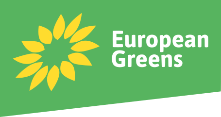

🚧 En cours de construction ...
NB : avec la Lituanie, la Pologne, la Roumanie et le Portugal, la France est un des rares pays d'Europe à avoir opté pour un régime semi-présidentiel plutôt que parlementaire. Le président, élu au suffrage direct, partage le pouvoir executif avec le premier ministre. Il est en charge de nommer celui-ci, ainsi que de son gouvernement.
Partis Politiques

Ensemble, coalition attrape-tout néolibérale centriste comprenant :
La Nouvelle Union populaire écologique et sociale (NUPES), union de gauche comprenant :
La France Insoumise (LFI), socialisme démocratique
Le Parti Socialiste (PS), social-libéral
Europe Écologie Les Verts (EELV), union de tendances écologistes diverses

Le Parti Communiste Français (PCF)
Le Rassemblement National, national-conservateur (extrême-droite)
Les Républicains, néolibéral conservateur (droite)